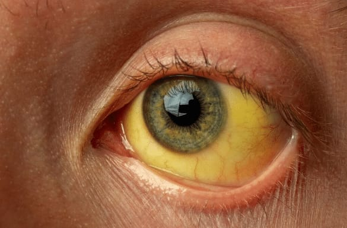

A hepatite-b é uma infecção sexualmente transmissível (IST) causada pelo vírus HBV. Ela é uma infecção grave que afeta o fígado, Na maioria dos casos, a doença é silenciosa e não apresenta sintomas. Quando surgem (geralmente na fase aguda), podem incluir cansaso extremo, enjoos, vomitos, febre, dor abodminal e icterícia (pele e olhos amarelados).
A principal forma de transmissão do vírus é a relação sexual sem preservativo, porém ela pode ocorrer de algumas outras maneiras, como compartilhamento de seringas, agulhas ou objetos cortantes não esterilizados (como alicates de unha e lâminas de barbear), da mãe para o bebê durante a gestação ou o parto (transmissão vertical) e procedimentos de tatuagem e piercing fora das normas de biossegurança.
A principal e mais eficaz forma de prevenção é a vacina aplicada de 3 ou 4 doses e disponível gratuitamente pelo SUS, o uso de preservativos e o não compartilhamento de objetos pessoais também são fundamentais.
O tratamento da hepatite B depende da fase da doença. Para infecções agudas, geralmente não há remédios específicos, pois a maioria dos adultos se cura espontaneamente. Já na forma crônica, o objetivo é controlar o vírus para evitar cirrose e câncer de fígado, sendo realizado através do uso contínuo de antivirais orais, como Tenofovir e Entecavir.
